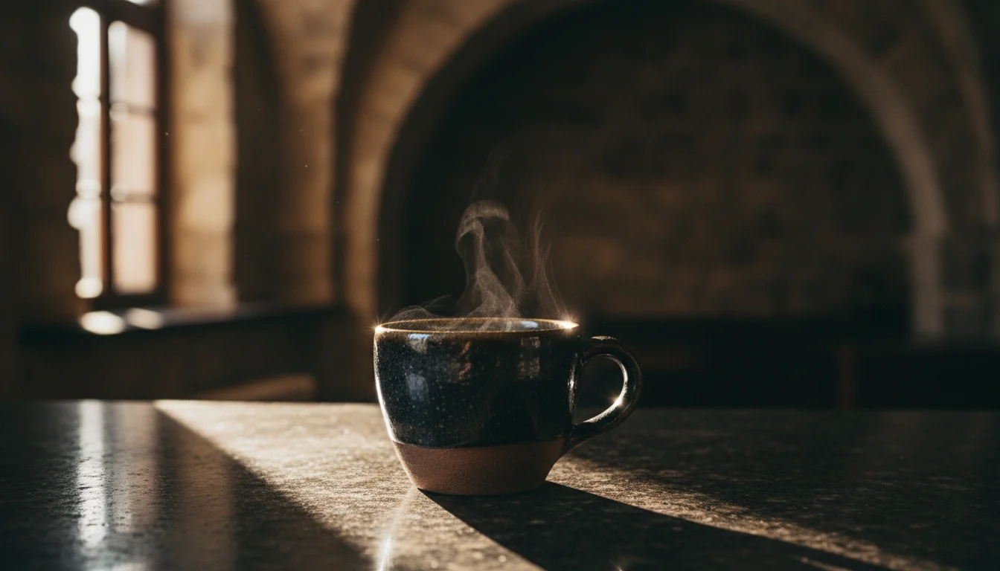
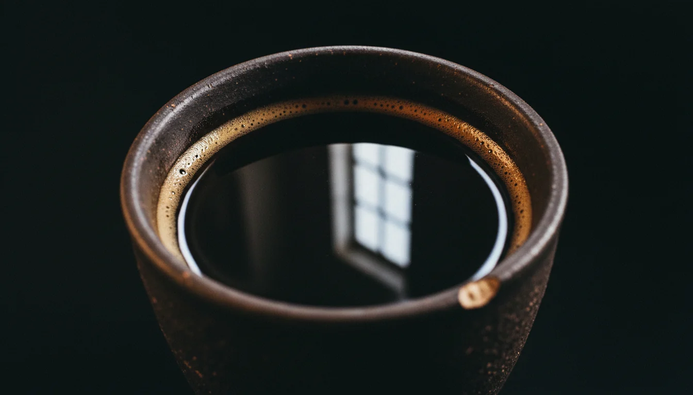
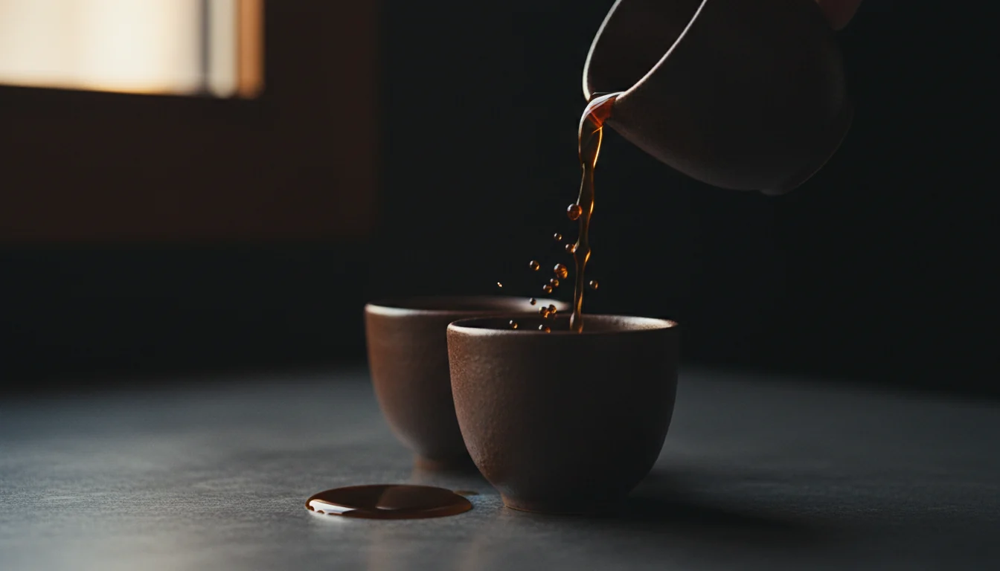
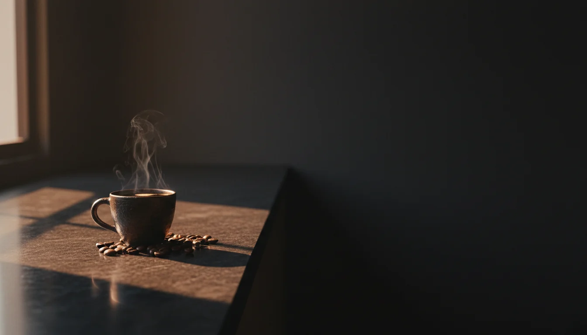
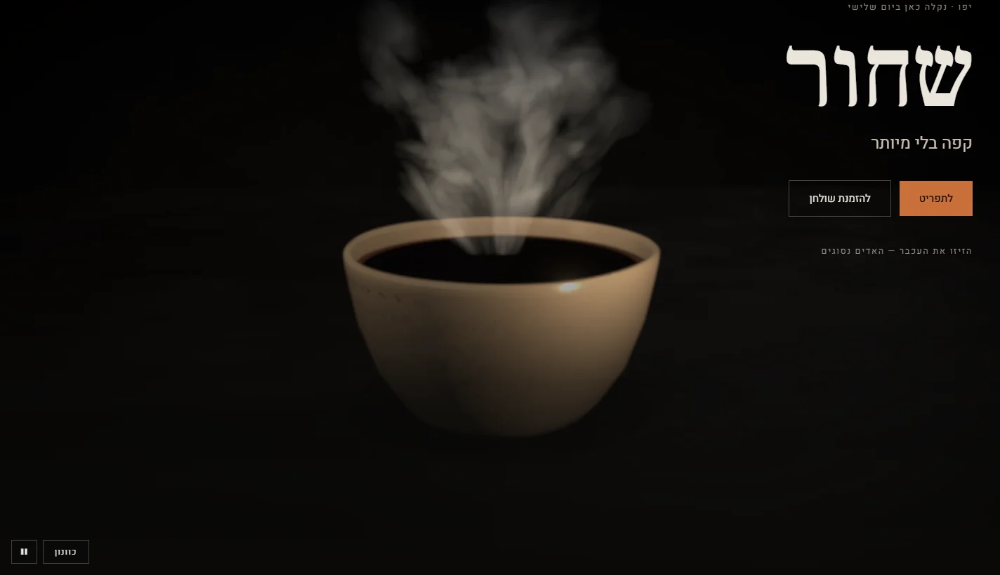

Четыре варианта эталонного кадра — это не картинки для сайта, а мишень для 3D-сцены.
Выбираешь один, дальше каждый технический шаг сверяем с ним: похоже стало или нет.
Внизу — что у нас в рендере прямо сейчас, для честного сравнения.
Вариант A

Свод и луч
Чашка на камне, за ней — свод старого Яффо в расфокусе, один луч из окна очерчивает кромку.
Даёт помещение: видно, что предмет где-то стоит, а не висит в пустоте.
Самый «атмосферный», но и самый сложный: фон придётся строить по-настоящему.
Вариант B

Чёрное зеркало
Макро сверху: кофе ведёт себя как чёрное стекло и отражает окно, по стенке — кольцо кремы.
Ровно тот эффект, который мы уже пытались получить и не добрали.
Технически честнее всего: почти весь результат делает окружение, фон почти не нужен.
Вариант C

Налив
Струя в контровом свете, отдельные капли, лужа на камне.
Это наш третий акт — он уже есть в сцене, здесь видно, как он должен выглядеть.
Самый эффектный в движении, но статичный кадр обещает больше, чем покажет реалтайм.
Вариант D

Стойка
Предмет в левой трети, правые две трети уходят в темноту.
Это буквально наша нынешняя компоновка: справа ложится текст и кнопки.
Самый «рабочий» для сайта, самый скромный как аттракцион.
Сейчас в браузере

Что мы имеем сегодня
Тот же ракурс, тот же сюжет. Разница не в мастерстве, а в начинке:
керамика без следов жизни, кофе отражает пустоту, помещения за чашкой нет вовсе,
пар выглядит дымом от костра.
Что от тебя нужно
Назови букву — A, B, C или D. Можно «A, но кофе как в B».
Если ни один не тот — скажи, чего не хватает, сгенерю следующий заход.
После выбора идём по одному шагу, каждый показываю по такой же ссылке.